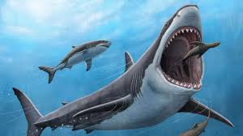

O Megalodon foi o maior tubarão que já existiu, dominando os oceanos há milhões de anos. Com até 18 metros de comprimento, ele era três vezes maior que um grande tubarão-branco atual. Sua mandíbula gigantesca exercia uma das mordidas mais potentes da história, capaz de caçar baleias. Esse superpredador acabou extinto devido a mudanças climáticas e à escassez de suas presas favoritas.